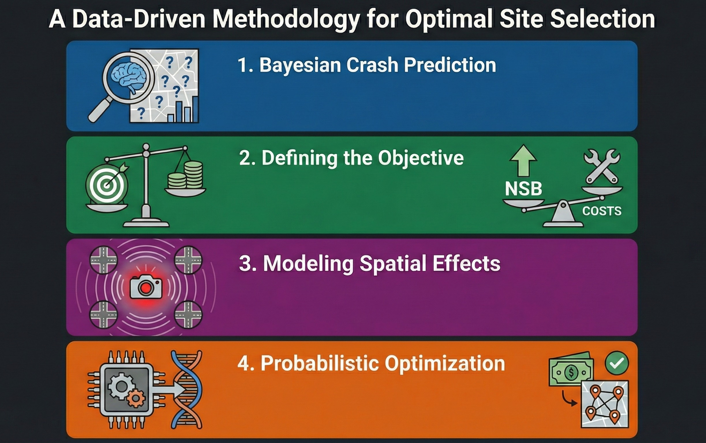

Portfolio
Featured Projects
Real-world data science solutions with measurable impact

Red Light Camera Site Optimization
GPU-accelerated Bayesian optimization for traffic safety investments, identifying optimal camera placements that maximize societal benefit across 1,500+ intersections.
$9.2M
Net Societal Benefit
3.9:1
Benefit-Cost Ratio

Real-Time AV Safety Assessment
Bayesian Extreme Value Theory model for predicting crash risk from autonomous vehicle sensor data in real-time, with cross-location transferability.
Proactive
Before-Crash Prediction
Transferable
Cross-Location Models